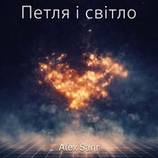

Кінематограф і ембієнт 16 треків4 альбоми Петля и свет 1Осознание снатекст → 2Калибровкатекст → 3Синхронизациятекст → 4Перепрошивкатекст → 5В потоктекст → 6Обнуление дуальноститекст → 7Возвращение к себетекст → Тихі моменти 7Місто крізь вікитекст → Петля і світло 1Усвідомлення снутекст → 3Синхронізаціятекст → 4Перепрошивкатекст → 5У потіктекст → Мозаика 2Единоетекст → 8Дети Землитекст → 10Ты больше чем...текст → 11Продавец воздухатекст →